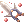
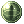
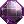
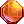
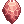
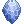

Illusion Dungeons (Español)
Illusion Dungeons
| Illusion of Frozen |
|---|
| Nivel Mínimo: 110+ |
| Guía |
| Illusion of Abyss |
|---|
| Nivel Mínimo: 150+ |
| Guía |
| Illusion of Teddy Bear |
|---|
| Nivel Mínimo: 150+ |
| Guía |
| Illusion of Luanda |
|---|
| Nivel Mínimo: 160+ |
| Guía |
| Illusion of Labyrinth |
|---|
| Nivel Mínimo: 170+ |
| Guía |
| Illusion of Underwater |
|---|
| Nivel Mínimo: 140+/180+ |
| Guía |
Daily Quest Reset
Como mecánica exclusiva de NovaRO, puedes reiniciar los cooldowns de tus daily quests.
Esto significa que eres capaz de farmear cuantas Illusion Stones quieras con un único personaje, sin necesidad de crear personajes adicionales para evitar los cooldowns de las quests.
Para reiniciarlos, habla con Osmundi. Puedes encontrarlo dentro de cada Illusion Dungeon en las siguientes ubicaciones:
- Illusion of Moonlight .
- Illusion of Vampire .
- Illusion of Frozen .
- Illusion of Abyss .
- Illusion of Teddy Bear .
- Illusion of Luanda .
- Illusion of Labyrinth .
- Illusion of Underwater .
Los reinicios se separan en 3 categorías distintas acorde al grupo de dificultad en que cada dungeon se encuentra. Cada reset te recompensará con una cantidad determinada de  Illusion Stones:
Illusion Stones:
- Categoría 1: Illusion of Moonlight, Illusion of Vampire e Illusion of Frozen.
- Recompensa al resetear: 12 Illusion Stone
- Recompensa al resetear: 12
- Categoría 2: Illusion of Abyss, Illusion of Teddy Bear e Illusion of Underwater - Primer Piso.
- Recompensa al resetear: 18 Illusion Stone
- Recompensa al resetear: 18
- Categoría 3: Illusion of Luanda, Illusion of Labyrinth e Illusion of Underwater - Segundo Piso.
- Recompensa al resetear: 24 Illusion Stone
- Recompensa al resetear: 24
El primer reinicio del día, para cada grupo, te otorgará 6 Illusion Stone adicionales.
Una vez completes las dailies de cualquiera de las categorías de arriba, puedes reiniciar las daily quest de dicha categoría. Tras reiniciarlas, las quests no volverán a dar mas experiencia hasta que haya transcurrido el tiempo para su reinicio normal.
Cada categoría puede ser completada y reiniciada por separado, pero no puedes reiniciar las dailies de un Illusion Dungeon en particular sin haber completado las otras dailies de su respectiva categoría.
Encantos Illusion
El Illusion Enchanter puede encontrarse en Prontera en prontera 91/115. El NPC te contará una breve historia la primera vez que hables con ella.
Encantos Posibles
Cada item solo puede ser encantado dos veces al costo de 5  Illusion Stones por intento. Solo puedes encantar Illusion items.
Illusion Stones por intento. Solo puedes encantar Illusion items.
Dependiendo del tipo de item, obtendrás diferentes encantos.
Nota: Actualmente, solo  Illusion Sharpened Legbone of Ghoul [2] cumple con los criterios de arma Nivel 3.


| Encantos de Armaduras (incluye headgear, armor, shoes y garment) | |||
|---|---|---|---|
 Max HP +1% Max HP +1%
|
 Max HP +2% Max HP +2%
|
 Max HP +3% Max HP +3%
|
 Max HP +4% Max HP +4%
|
| SP Absorb 1 | SP Absorb 2 |  HP Absorb 1 | HP Absorb 2 |
| Rune of Strength Lv 1 | Rune of Strength Lv 2 | Rune of Agility Lv 1 | Rune of Agility Lv 2 |
|  Rune of Vitality Lv 1 |  Rune of Vitality Lv 2 Rune of Vitality Lv 2
|
 Rune of Intellect Lv 1 Rune of Intellect Lv 1
|
 Rune of Intellect Lv 2 Rune of Intellect Lv 2
|
 Rune of Dexterity Lv 1 Rune of Dexterity Lv 1
|
 Rune of Dexterity Lv 2 Rune of Dexterity Lv 2
|
 Rune of Luck Lv 1 Rune of Luck Lv 1
|
 Rune of Luck Lv 2 |
 Str +2 Str +2
|
 Str +3 Str +3
|
 Str +4 Str +4
|
|
 Agi +2 Agi +2
|
 Agi +3 Agi +3
|
 Agi +4 Agi +4
|
|
 Vit +2 Vit +2
|
 Vit +3 Vit +3
|
 Vit +4 Vit +4
|
|
 Int +2 Int +2
|
 Int +3 Int +3
|
 Int +4 Int +4
|
|
 Dex +2 Dex +2
|
 Dex +3 Dex +3
|
 Dex +4 Dex +4
|
|
 Luk +2 Luk +2
|
 Luk +3 Luk +3
|
 Luk +4 Luk +4
|
|
| Encantos de Accesorios | ||
|---|---|---|
|  HP +200 |  HP +300 HP +300
|
 HP +400 HP +400
|
 SP +20 SP +20
|
 SP +50 | SP +75 |
| Str +2
|
Str +3
|
Str +4
|
| Agi +2
|
Agi +3
|
Agi +4
|
| Vit +2
|
Vit +3
|
Vit +4
|
| Int +2
|
Int +3
|
Int +4
|
| Dex +2
|
Dex +3
|
Dex +4
|
| Luk +2
|
Luk +3
|
Luk +4
|
Reset de Encantos
El Illusion Enchanter podrá reiniciar ambos de tus encantos por cierto costo. Antes de reiniciar los encantos, el item primero debe estar encantado completamente (es decir, con ambos slots de encantos ocupados).
Dependiendo de la opción que escojas, tiene una probabilidad de fallar, la que resultará en la pérdida del item. Es recomendado pagar la tarifa completa para evitar esta situación.
| Precio | Probabilidad de éxito |
|---|---|
| 100,000 zeny | 50% |
| 200,000 zeny | 60% |
| 300,000 zeny | 70% |
| 400,000 zeny | 80% |
| 500,000 zeny | 100% |
| 5 Illusion Stones
|
100% |
Reset Parcial
Por el precio de 30 Illusion Stones o 5,000,000 zeny, puedes escojer reiniciar solo un encanto, manteniendo el otro tal como está.
Encantos Illusion para armas Nivel 4
A pesar de que el sistema regular de encantos Illusion cuente con opciones de encantos para armas, las Armas Illusion de nivel 4 no comparten los mismos encantos posibles.
A excepción de Illusion Sharpened Legbone of Ghoul [2], cualquier otra arma Illusion puede ser encantada a través de Resonance Stone of Dusk (para encantos físicos) o Resonance Stone of Dawn (para encantos mágicos).
Estos dos items pueden ser comprados con el Illusion Merchant NPC (prontera 88/113).
Cada piedra cuesta 2,000,000 zeny o 10 Illusion Stone.
Al usar una piedra de encanto (darle doble click para activarla) se abrirá una ventana de encanto que mostrará todas las armas Illusion de nivel 4 que hayan en tu inventario. Confirmar el encanto consumirá la piedra e imbuirá el arma con 2 encantos aleatorios diferentes entre sí, dependiendo del slot encantado.
No existe la posibilidad de romper, dañar, perder refines o cartas en tu arma al encantar. Puedes reemplazar los encantos en tu arma al usar otra piedra.
| Resonance Stone of Dusk - Encantos físicos para Armas Nivel 4 | |
|---|---|
| Encantos en el 1er Slot | Encantos en el 2do Slot |
|
|
| Resonance Stone of Dawn - Encantos mágicos para Armas Nivel 4 | |
|---|---|
| Encantos en el 1er Slot | Encantos en el 2do Slot |
|
|